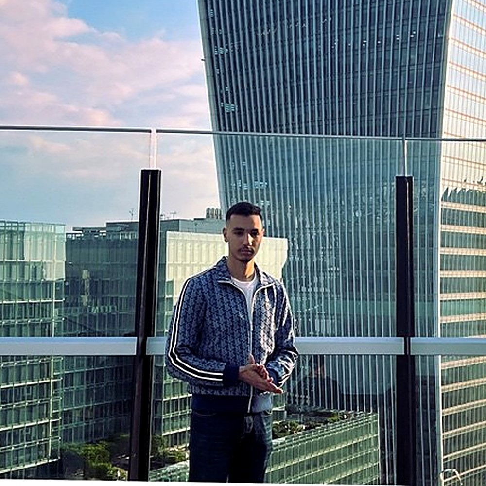
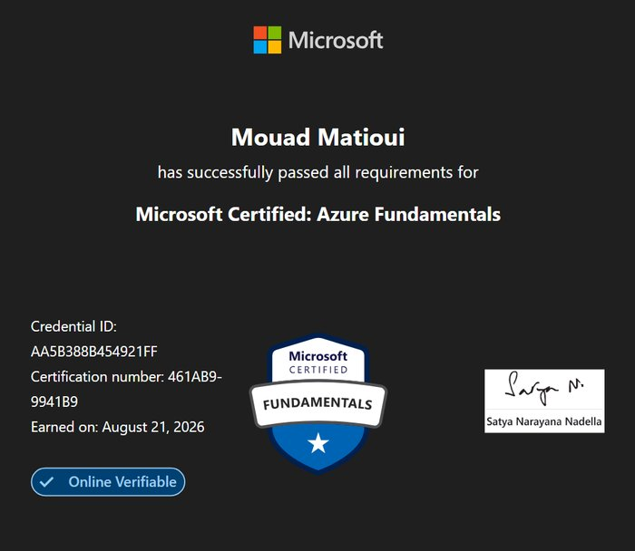
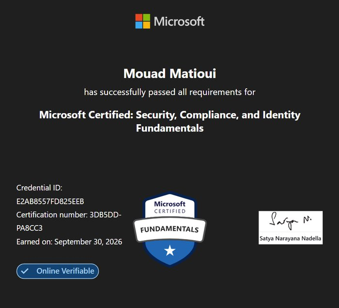
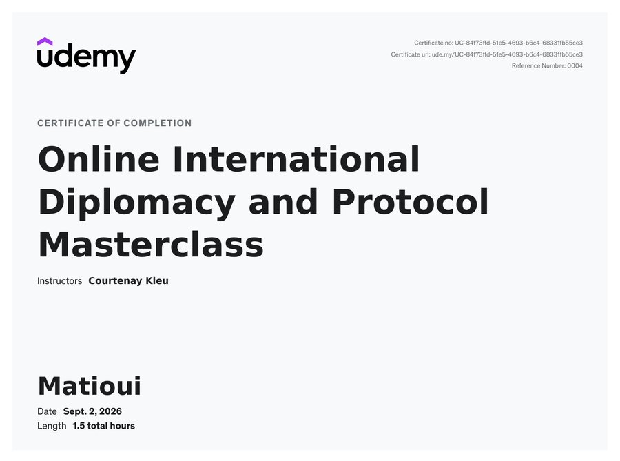
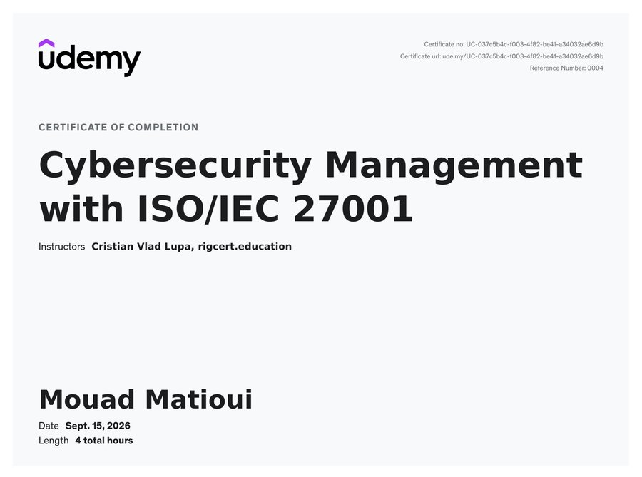
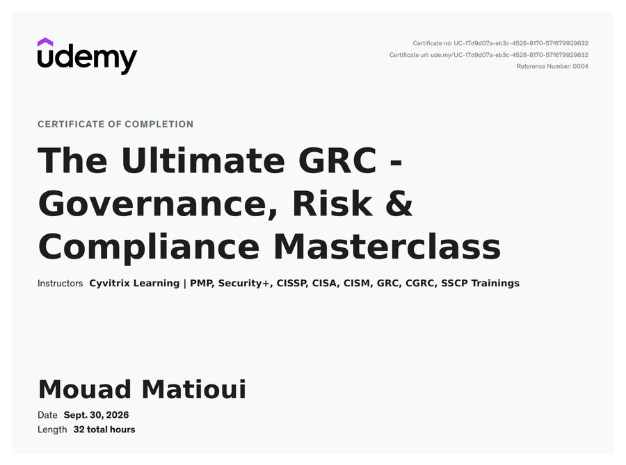
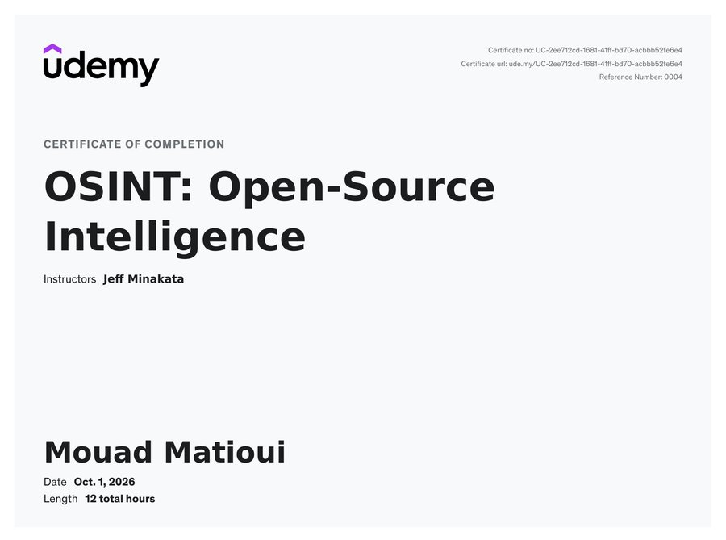
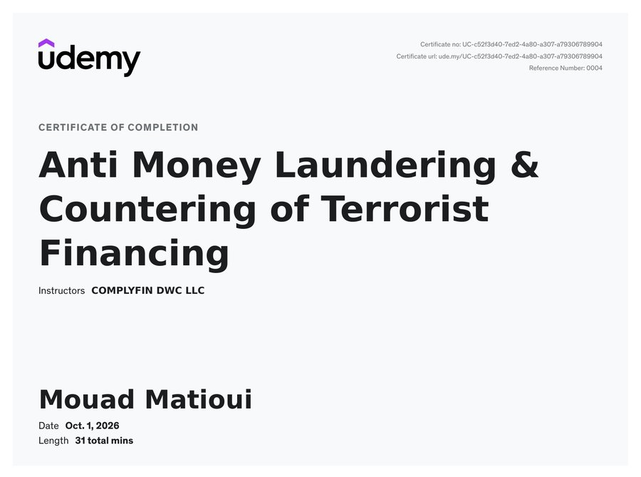

I am a First Class Cybersecurity graduate of the University of Hertfordshire (4.06 CGPA) now working as a Graduate Engineer at LMAX Group, a London based fintech. I specialize in bridging the gap between technical defense mechanisms and information assurance audits.

In the spirit of transparency and open-source intelligence, I believe in acknowledging the tools and inspirations behind this platform.
This portfolio draws inspiration from the CyberSure Erasmus Mundus design language. While not a replication, I have adapted specific animation dynamics and the structural layout to create a cohesive visual bridge between my personal brand and the program's identity.
While the content, academic achievements, and code logic within my projects are strictly my own, I leveraged Generative AI to refine the CSS architecture and frontend responsiveness of this website.
My background combines cryptographic protocols with high-level governance (ISO 27001). Now a Graduate Engineer at LMAX Group, following an industrial placement and part-time analyst role at Immunocore, I ensure that digital transformation and AI integration remain secure and compliant.
BSc (Hons) Computer Science (Cyber Security and Networks), First Class (4.06 CGPA)
Math and Economics - 87%
Information Security Management Systems







Automated compliance monitoring tool using Graph API and Python to streamline ISO 27001 audits and enforce security policies across Active Directory.
Research project analyzing the resilience of various VPN protocols against post-quantum cryptographic attacks and their implications for future-proof network security.
Framework for assessing bias and data leakage risks in internal Machine Learning models.